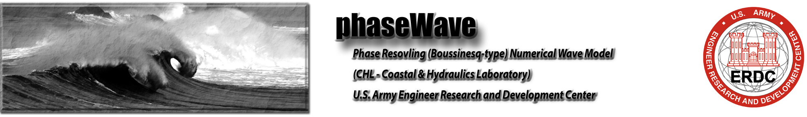

References
BOUSS2D
Nwogu, O. 1993. `Alternative form of Boussinesq equations for nearshore wave propagation.`_ Journal of Waterway, Port, Coastal and Ocean Engineering, ASCE , 119(6), 618-638.
Nwogu, O. 2006. `Boussinesq modeling of landslide-generated waves and tsunami runup. In Advanced Numerical Models For Simulating Tsunami Waves And Runup Advances in Coastal and Ocean Engineering`_ (Eds. P.L.-F Liu, H. Yeh and. C. Synolakis) , Vol. 10, 273-278.
Demirbilek, Z., O.G. Nwogu, D.L. Ward, and A. Sanchez. 2009. `Wave transformation over reefs: Evaluation of one-dimensional numerical models.`_ ERDC/CHL Technical Report 09-1 , U.S. Army Corps of Engineers Research and Development Center, Vicksburg, MS.
Nwogu, O. and Z. Demirbilek,. 2008. `Nonlinear wave transformation and runup over fringing coral reefs.`_ Proc. 31st Int. Conference on Coastal Engineering , Hamburg, Germany.
COULWAVE
Park, H., Cox, D., Lynett, P., Wiebe, D., and Shin, S. 2013. `Tsunami Inundation Modeling in Constructed Environments: A Physical and Numerical Comparison of Free-Surface Elevation, Velocity, and Momentum Flux.`_ Coastal Engineering , v. 79, pp. 9-21, doi: 10.1016/j.coastaleng.2013.04.002.
Lovolt, F., Pedersen, G., and Lynett, P. 2013. `Simulating run-up on steep slopes with operational Boussinesq models; capabilities, spurious effects and instabilities.`_ Nat. Hazards Earth Syst. Sci. , v. 20, pp. 379-395, doi:10.5194/npg-20-379-2013.
Lynett, P., and Liu, P. L.-F. 2011. `Simulation of Complex Tsunami Behavior.`_ Computing in Science and Engineering Magazine , v. 13(4), pp. 50-57, doi: 10.1109/ MCSE.2011.22.
Son, S., Lynett, P., and Kim, D.-H. 2011. `Nested and Multi-Physics Modeling of Tsunami Evolution from Generation to Inundation.`_ Ocean Modelling , v. 38 (1-2), p. 96-113, doi: 10.1016/j.ocemod.2011.02.007.
FUNWAVE
Kirby, J. T., Shi, F., Tehranirad, B., Harris, J. C. and Grilli, S. T. 2013. `Dispersive tsunami waves in the ocean: model equations and sensitivity to dispersion and Coriolis effects.`_ Ocean Modelling , 62, 39-55.
Ma, G., Shi, F. and Kirby, J. T. 2012. `Shock-capturing non-hydrostatic model for fully dispersive surface wave processes.`_
Shi, F., Kirby, J. T., Harris, J. C., Geiman, J. D. and Grilli, S. T. 2012. `A high-order adaptive time-stepping TVD solver for Boussinesq modeling of breaking waves and coastal inundation.`_ Ocean Modelling , 43-44, 36-51.
Shi, F., Kirby, J. T. and Tehranirad, B. 2012. `Tsunami benchmark results for spherical coordinate version of FUNWAVE-TVD (Version 2.0).`_ Research Report No. CACR-12-02 , Center for Applied Coastal Research, Univ. of Delaware, Newark.